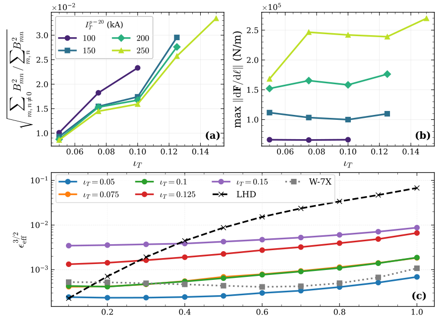

轴对称偶极线圈阵列：混合托卡马克–仿星器可行性
Feasibility of a flexible, hybrid tokamak-stellarator experiment using an axisymmetric dipole coil array
原文与出版信息 ↗ · 据用户提供版本整理；公式离线预渲染；原图为关键图精选，非全文翻译。
一、研究目标：同一组固定线圈，覆盖三种运行方式
Halpern 等人提出大学尺度的托卡马克—仿星器混合实验：在近轴对称真空室外布置平面高温超导偶极线圈阵列，主要改变电流而不是重新制造线圈，即可产生准轴对称真空仿星器、有等离子体电流的混合平衡，以及强正／负三角度托卡马克。文章讨论的是基于 HBT-EP 尺寸的设计可行性，并非已经建成并验证约束性能的装置。（原文第 1–3 页）
这套方案主动用磁场效率换取实验灵活性。固定线圈阵列不必围绕单一平衡定制，甚至可以把三维平衡沿环向旋转，在多次放电中让固定诊断获得不同截面的信息；代价是电流、对称性误差、等离子体体积及旋转变换必须共同权衡。
二、硬件约束为何决定优化方法
参考主半径约 1 m、展弦比约 7、轴上场 0.5 T；选用 16 个 TF 线圈和环向 32 列偶极线圈。主要结果采用极向 10 排，即完整阵列共 320 个偶极位置，对称性进一步减少独立电流数。偶极为局部切于真空室的圆角矩形，丝状线圈之间预留 5 cm，名义圆截面最大半径约 2.5 cm；TF 线圈距离真空室 15 cm。（第 2–3 页）
几何只通过真空室主半径、椭圆截面两轴及极向线圈数变化。没有让每个线圈独立移动和转动，常规“先找好平衡，再配线圈”的两阶段方法因此容易得到无法实现的边界。论文的策略是：两阶段产生可用初值，单阶段联合优化电流和磁面。
工程约束先用电流上限代理，再后处理点态单位长度力。文献给出的 HTS 容忍范围为 ，但作者强调该比较只是数量级筛查：支撑结构上的净力、力矩、绕组匝数和低温布局可能才是实际限制，必须进一步进行有限元分析。
三、优化链条与关键方程
3.1 两阶段初值：低误差与低电流本身矛盾
Stage-I 用 VMEC 优化 QA 平衡，控制旋转变换、体积、边界到真空室的距离和表面曲率。取目标体积 ，得到约 的初值。Stage-II 对每个极向线圈数随机采样 100 个真空室几何，然后解电流的最小二乘问题：
固定几何下磁场对电流是线性的。作者在这些几何中未观察到需要正则化的病态电流解，因此该步不加电流惩罚，而从误差—峰值电流的 Pareto 前沿选初值。约 0.5% 场误差足以启动后续单阶段算法；即使电流超过 500 kA，固定初始平衡仍达不到通常约 0.1% 的两阶段精度。这不是没有优化电流，而是原目标边界与受限线圈几何不匹配。9 排极向线圈未找到满足初值误差门槛的点，10 与 11 排可行。（第 4–6 页）
3.2 单阶段：直接优化线圈真正产生的磁面
以 Boozer 坐标表示磁面 ，在给定体积下最小化磁面方程残差：
随后以边界上的 QS 误差为主目标，限制磁面残差、电流和旋转变换偏差：
20 范数是最大电流的平滑近似，并不严格等于峰值。作者扫描其目标 100、150、200、250 kA，以大权重惩罚约束违背；Fourier 分辨率依次从 6 增到 9、12，磁面残差目标逐步减到约 ，最后用 Poincaré 图检查嵌套磁面。报告中的 QS 图常用非 QA Fourier 分量归一化平方和的平方根，不应直接当作上述目标函数本身。（第 7–9 页）
四、最重要的物理图像：距离有上下两侧限制
偶极靠近等离子体时，所需电流小，但单个线圈的局部场集中，离散阵列的极向波纹增大，破坏磁面；离远后，邻近线圈的场更平滑地叠加，却需要更大电流恢复整形。因而本设计中误差门槛限制最小距离，电流门槛限制最大距离，两者圈定可用的轴对称包络。不能机械套用“越近越容易实现目标场”的直觉。（第 6、9–11 页）
更大真空旋转变换需要磁轴扭转和／或旋转椭圆整形。非轴对称表面在固定包络里占据的体积分数下降：固定 250 kA、体积 ，把目标 从 0.05 增至 0.10、0.15 时， 从 0.75 降至 0.68、0.64。要维持体积，包络必须长大，边界就更容易逼近线圈并产生磁岛。
固定 时收紧电流上限，包络占比反而基本不变，约为 。变化主要在整形分布：磁轴趋于平面，原本集中的内侧整形向更广极向范围分散，以旋转椭圆补足旋转变换，但牺牲 QA 质量。体积、旋转变换、电流与 QS 误差不是四个可独立指定的旋钮。

五、可行范围：数字要连同体积和电流一起读
| 情形 | 论文报告 | 限定条件 |
|---|---|---|
| 真空 QA | 时最高展示 ；体积降至 后可达 0.2 | 目标 250 kA；以嵌套磁面为验收条件 |
| 点态电磁力 | 扫描最大约 | 约为引用容忍范围下限的 70%，不是结构安全认证 |
| 外侧稀疏阵列 | 移除外侧中平面一排后，在极向打开约 20 cm 缝隙；QS 目标比密集阵列差约 10–20% | 展示 、250 kA、 |
| 有限压强混合运行 | 轴上 ，边界外部旋转变换比例约 0.25；峰值偶极电流下降约 20% | ，轴压 306 Pa，轴上 ，体积平均 0.07% |
在 、250 kA 的 计算中出现大范围非嵌套区，该点不能作为成功构型；摘要中的 0.2 对应减小体积后的情形。另一方面，某次优化失败也不证明该参数组合在所有初值和算法下绝不可能。（图 4–9，第 8–12 页）
有效波纹比较显示低变换方案（）在该新经典代理上接近所选 W7-X 对照，高变换方案的体积平均表现仍优于所选内移 LHD。这里比较的是有效波纹，不是已经计算了完整湍流、快粒子及实验能量约束。
六、混合平衡与托卡马克功能
有限 计算先把 HBT-EP 压强、电流剖面加到已有真空边界，求固定边界 VMEC 平衡；再通过 virtual-casing 原理计算等离子体电流的法向场，将 加入 Stage-II 目标，并以自由边界 VMEC 复核。低 案例的 QS 误差变化不大，但不能外推到高 或极高精度 QA。该点通过 Mercier 稳定性检查，外部旋转变换也落在先前实验有利于抑制 MHD 的范围，仍没有完成所有 MHD 模式的稳定性证明。（第 12–14 页）
同一阵列还能修正离散 TF 线圈的波纹：
极值沿环向取。在主半径 1 m、小半径 14 cm 的示例外侧中平面，以约 1% 为门槛，仅 TF 需约 20 个；密集偶极阵列可降到 12 个，外侧稀疏阵列可降到 16 个。满足门槛的方案最大偶极电流为 27 kA。对低展弦比的补充检查中，密集阵列约能减少四分之一 TF 线圈，但稀疏阵列不一定仍有此收益。（图 12，第 14–15 页）
环向对齐的偶极电流又能近似产生一对反向 PF 线圈。TokaMaker 给出正／负三角度双零点平衡，、，轴对称模型峰值电流分别 13.3、14.3 kA。完整三维复核后，NT/PT 表面平均归一化法向场误差为 0.1%/0.3%，边界最大波纹为 0.5%/1.2%。PT 不能被笼统称为已满足 1% 波纹门槛。该分析只覆盖电流平台段，启动和下降阶段仍需额外铜 PF 线圈。（图 13，第 15–17 页）
七、研究价值与后续验证
本工作的价值是展示固定硬件中的多平衡设计空间，而不是找到最佳反应堆。下一步应检验有限截面线圈对局部波纹的平滑作用、支撑结构净力与力矩、稀疏布局和诊断可达性、不同场周期、有限压强 MHD 与输运。论文仅优化 QA；对 QH/QI 的可达性属于作者提出的后续方向，不是本研究已经实现的结果。
- 为什么固定边界的线性电流最小二乘仍不能替代单阶段优化？
- 同为“最大 ”，体积从 0.3 降到 为何改变结论？
- 比较 HTS 点态力容限、Mercier 稳定性和有效波纹时，各自没有检验哪些实际运行风险？
来源：Jacob Halpern 等，Feasibility of a flexible, hybrid tokamak-stellarator experiment using an axisymmetric dipole coil array，Nuclear Fusion 66 (2026) 126045，DOI: 10.1088/1741-4326/aeacfa。页码为期刊正文页码，上传 PDF 另含 1 页封面；本文未复制封面下载信息。